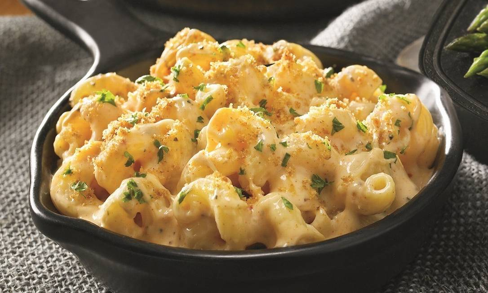

Mac and Cheese

DESCRIPTION:
Mac and Cheese is a typical American pasta dish with lots of cheese sauce.
INGREDIENTS:
- 1 cup uncooked macaroni.
- 1 cup cheddar.
- 1 egg.
- 1 cup milk.
- butter.
- Grated parmesan cheese
STEPS:
- Cook the pasta. Drain it.
- Place layers of the pasta and cheese in the baking dish.
- In a bowl, beat the egg, milk, salt, until blended.
- Pour this mixture over the pasta.
- Dot with butter and sprinkle with grated Parmesan cheese.
- Bake for 30-40 minutes.